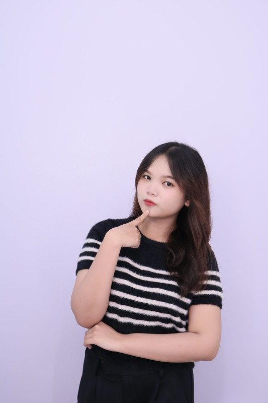

Halo, perkenalkan 👋
Swissia Viendyana
Calon Guru Sekolah Dasar · Primary Teacher Education, BINUS University
"Setiap anak belajar dengan caranya sendiri dan berhak mendapat kesempatan untuk mengeksplorasi potensinya."
Tentang Saya 🐚

Halo! Saya Swissia Viendyana, mahasiswa S1 Pendidikan Guru Sekolah Dasar (Primary Teacher Education) di BINUS University. Saya tertarik menciptakan pengalaman belajar yang bermakna — memadukan pedagogi yang kuat dengan kreativitas. Bagi saya, pendidikan bukan sekadar mentransfer pengetahuan, tetapi juga menumbuhkan rasa ingin tahu, berpikir kritis, dan kolaborasi.
Saya percaya setiap anak belajar dengan caranya sendiri dan berhak mengeksplorasi potensinya. Karena itu saya merancang pembelajaran dan media yang interaktif, inklusif, dan menyenangkan. Latar belakang saya di bidang mengajar, mentoring, serta proyek digital kreatif seperti animasi, AR/VR, dan desain grafis mendukung tujuan saya membuat pembelajaran yang menarik sekaligus berdampak.
Filosofi Mengajar
Sebagai calon guru, saya ingin menjadi bukan hanya pengajar, tetapi juga fasilitator, motivator, dan teladan bagi murid-murid saya.
Pendidikan & Pengalaman 🐢
-
Pendidikan
S1 Pendidikan Guru Sekolah Dasar
BINUS University · Fakultas Humaniora
Mahasiswa Primary Teacher Education. Masuk Dean's List 2024 atas pencapaian akademik yang menonjol.
-
Perancang Kurikulum
Curriculum Designer — Sakola Kembara
Inisiatif nirlaba · pendidikan gratis
Merancang dan mengembangkan program belajar untuk Sakola Kembara, yang menyediakan pendidikan gratis bagi siswa tanpa akses bimbel berbayar. Membuat lesson plan, materi belajar, asesmen, dan latihan soal UTBK dengan menjaga relevansi serta keterlibatan siswa.
-
Guru Relawan
Volunteer Preschool Teacher
Pendidikan Anak Usia Dini
Mendukung pendidikan anak usia dini dengan merancang dan menyampaikan pembelajaran yang menarik: literasi dasar, numerasi, dan aktivitas kreatif, sambil membangun lingkungan belajar yang menyenangkan. Memperkuat kesabaran, adaptasi, dan komunikasi.
-
Kepemimpinan
Freshmen Leader
BINUS University
Membimbing dan mendampingi mahasiswa baru saat orientasi dan transisi ke kehidupan kampus; memfasilitasi aktivitas kelompok, workshop, dan diskusi untuk membangun rasa kebersamaan.
-
Mentoring
Freshmen Partner
BINUS University
Memberi pendampingan satu tahun penuh untuk mahasiswa baru sebagai mentor dan teman sebaya — lewat check-in rutin, diskusi 1-on-1, dan berbagi sumber daya untuk mendukung adaptasi dan perkembangan mereka.
-
Event
Concert Usher — KAT 9.0
Konser musik klasik
Membantu pengalaman penonton: menyambut tamu, mengarahkan ke tempat duduk, dan memberikan informasi acara, sambil mendukung kelancaran penyelenggaraan.
Kompetensi & Keahlian 🪸
Kurikulum & Pengajaran
- Kurikulum Merdeka
- Kurikulum 2013 (K13)
- IB Curriculum
- Penyusunan RPP / Lesson Plan
- Inquiry-based Learning
- Asesmen Pembelajaran
- Manajemen Kelas
Media & Teknologi Pembelajaran
- Blender (3D)
- Adobe Premiere Pro
- Scratch
- Roblox Studio (Lua)
- Media AR / VR
- Microsoft Office
Bahasa & Soft Skill
- English C-Level (Beelingua)
- Komunikatif
- Kreatif
- Sabar & Telaten
- Empati pada Anak
- Kolaborasi
Proyek & Karya Kreatif 🐙
Media pembelajaran interaktif: game edukasi, animasi, dan VR.
Game edukasi di Scratch tentang energi terbarukan (air, angin, matahari). Pemain mengendalikan Kuci menelusuri labirin dan mengumpulkan orb energi untuk menyalakan kembali dunia.
Mini-game matematika: selesaikan soal untuk menyelamatkan hewan laut yang terjebak dalam balok es. Melatih problem-solving lewat permainan yang seru.
Animasi sains: karakter kucing "Kuci" menjelaskan apakah aman melihat gerhana matahari secara langsung — membuat sains menyenangkan, mudah dipahami, dan aman.
Animasi edukasi sejarah kemerdekaan Indonesia, dipandu maskot kucing. Karya ini telah tercatat Hak Cipta di Kemenkumham RI.
Media pembelajaran VR yang mengenalkan sistem pencernaan manusia secara imersif: jelajahi tiap organ, fungsinya, dan penyakit yang umum terjadi.
Animasi edukasi dengan karakter Alino yang mengenalkan konsep iklan kepada siswa — tujuan, struktur, dan dampaknya — lewat cerita dan visual.
Proyek tim membuat miniatur warisan budaya Sulawesi Barat — Rumah Adat Boyang, alat musik tradisional, dan busana adat — untuk melestarikan budaya secara kreatif.
Praktik Mengajar 🐡
Sesi micro-teaching matematika berbasis kurikulum IB. Lewat role-play membuka toko pakaian, siswa menerapkan budgeting, perhitungan laba, dan analisis biaya dalam konteks nyata. (Klik untuk video)
Beberapa RPP dirancang untuk kurikulum IB, K13, dan Kurikulum Merdeka — masing-masing disesuaikan dengan tujuan belajar, pendekatan mengajar, dan metode asesmennya. (Klik untuk dokumen)
Sertifikat & Penghargaan 🏅
International Conference on ICT for Smart Society 2025, Institut Teknologi Bandung · Paper: "Analyzing the Effectiveness of Generative AI in Providing Learning Support"
Fakultas Humaniora, BINUS University — pencapaian akademik di Primary Teacher Education
"Video Animasi Perjalanan Indonesia Menuju Kemerdekaan" · Kemenkumham RI (No. 000926362)
Telkom Indonesia × Google Developer Student Clubs · 2024
BINUS University, 2024 — Market Research & Business Communication, Advanced English, Creative Writing, Professional Office
Hubungi Saya 🐠
Tertarik berkolaborasi atau menawarkan posisi mengajar? Yuk ngobrol!
- 📧 viendyanaswissia@gmail.com
- 📱 +62 5171736935
- 💼 LinkedIn — Swissia Viendyana
- 📍 Bekasi, Jawa Barat